Ghidra, x64dbg, radare2, Frida e IA para engenharia reversa.
| Vídeo | Projeto | O que faz | Pasta de origem | |
|---|---|---|---|---|
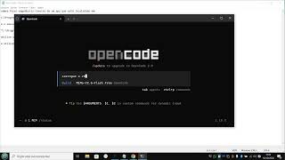 Como Usar o REA com Ghidra e OpenCode 100% gráti | NationalSecurityAgency/ghidra | 99k★ · framework de engenharia reversa da NSA. | curado — busca na internet | |
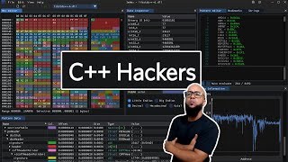 Como Fazer Engenharia Reversa com ImHex e escond | 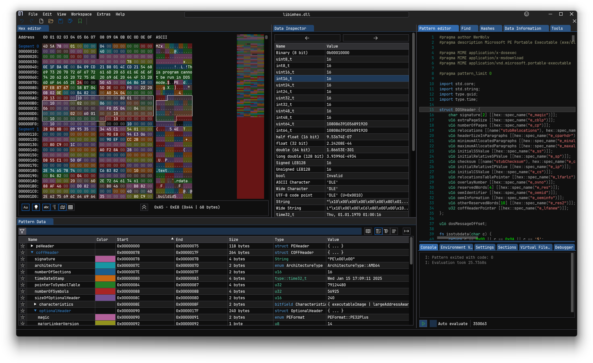 | WerWolv/ImHex | 55k★ · editor hexadecimal feito para engenharia reversa. | curado — busca na internet |
| COMO CRAQUEAR UM PROGRAMA PARTE 2 | 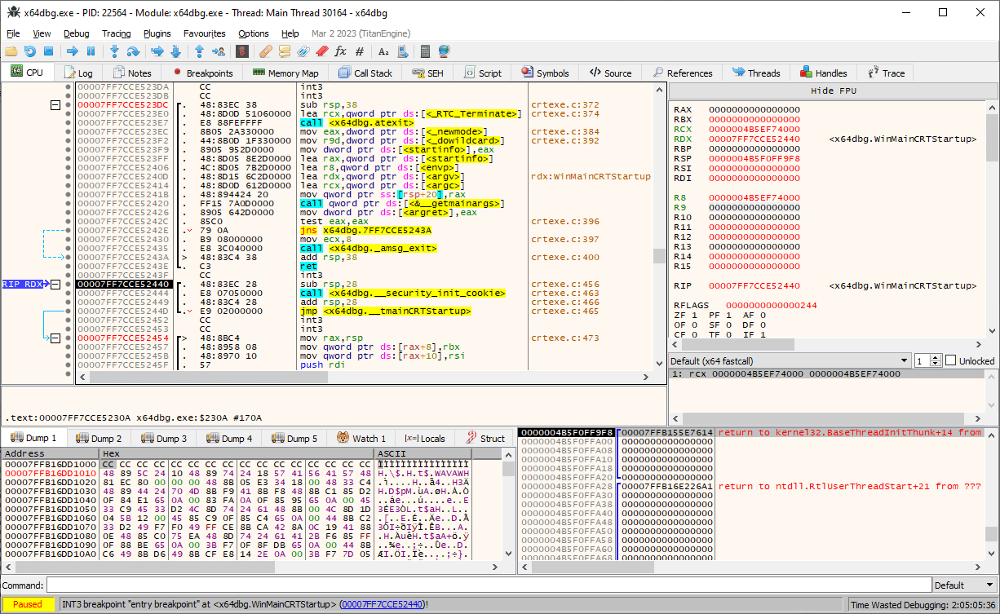 | x64dbg/x64dbg | 50k★ · debugger de Windows para RE e malware. | curado — busca na internet |
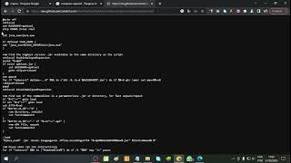 Como descompilar e compilar apk com APKTOOL uma | iBotPeaches/Apktool | 27k★ · engenharia reversa de APK (Android). | curado — busca na internet | |
| Instalação do radare2 - Aula 0 | 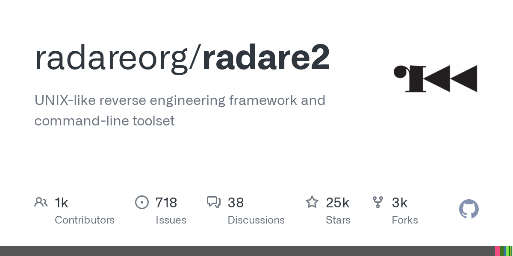 | radareorg/radare2 | 25k★ · framework de RE em linha de comando. | curado — busca na internet |
| Como usar Frida (ByPass SSL / Root) | 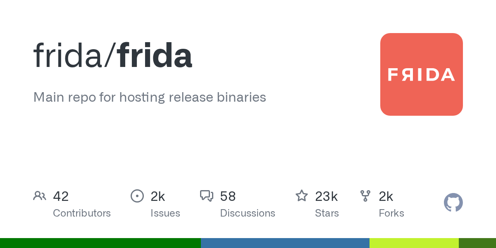 | frida/frida | 22k★ · instrumentação dinâmica (hook em apps e jogos). | curado — busca na internet |
| The Master Cutter 2: Atoy, hindi umabot sa Famil | 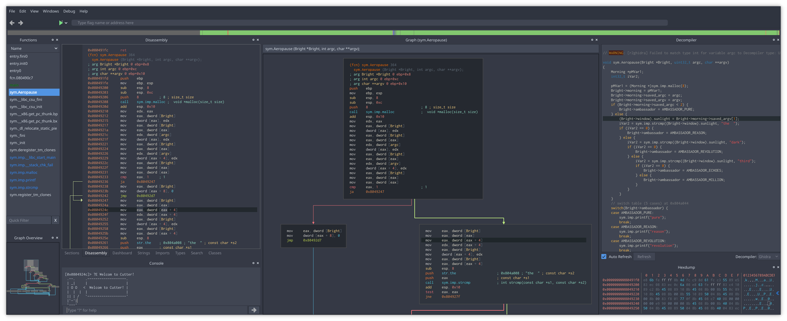 | rizinorg/cutter | 20k★ · plataforma gráfica de RE (base Rizin). | curado — busca na internet |
| O QUE É BYTECODE? PROFESSOR JEAN VARGAS | 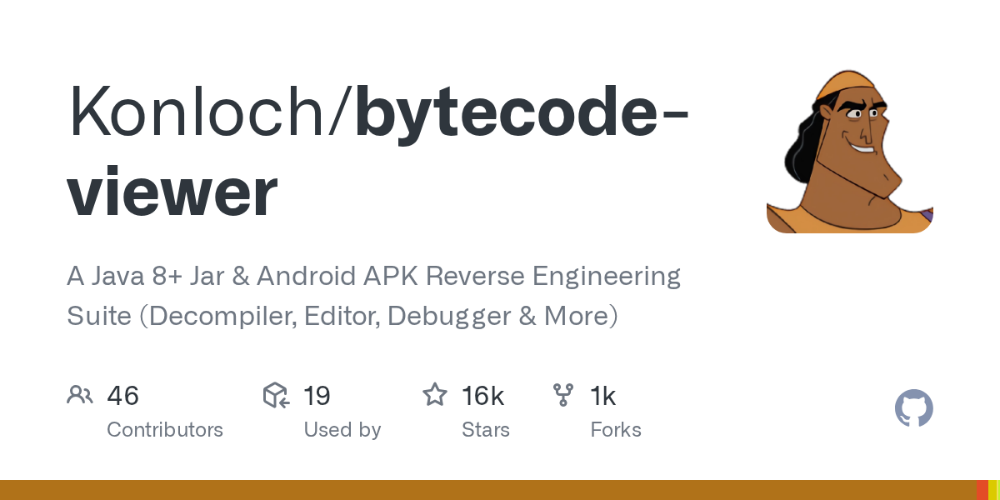 | Konloch/bytecode-viewer | 15k★ · decompilador/editor de JAR e APK. | curado — busca na internet |
| IDA Pro for Idiots (PT-BR) | Guia para Iniciante | 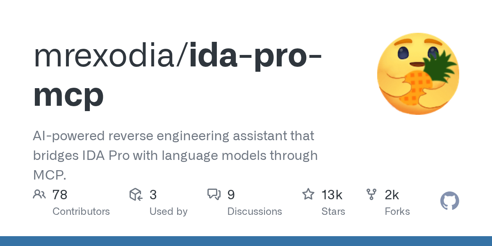 | mrexodia/ida-pro-mcp | 13k★ · liga o IDA Pro a modelos de IA (RE assistida). | curado — busca na internet |
| Intro to pwndbg - CTF Cookbook | 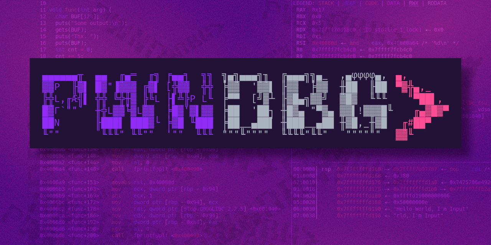 | pwndbg/pwndbg | 11k★ · GDB/LLDB com superpoderes para RE e exploit. | curado — busca na internet |
| A Dolly Parton Tribute (Tweetsie Railroad ANGR) | 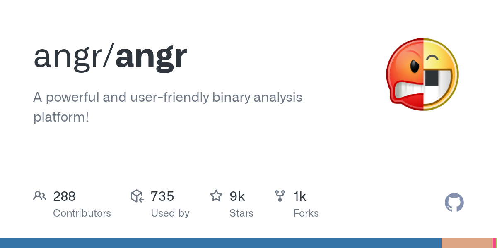 | angr/angr | 9.3k★ · análise de binários e execução simbólica. | curado — busca na internet |
| Как делать моды без знаний кода | Гайд по Univer | rehan-remade/universal-modder | 9.6k★ · skills/tools que deixam o Claude Code moddar jogos. | curado — busca na internet |